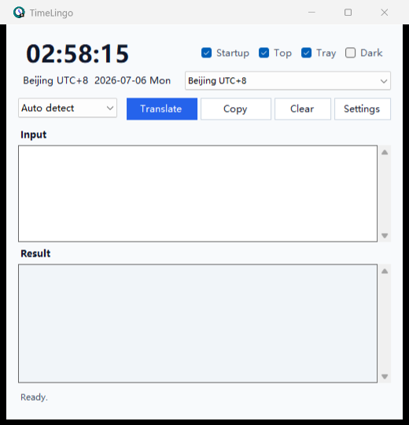

World time presets
Switch between Beijing, UTC, Pacific, Eastern, London, Tokyo, Singapore, Sydney, and more.
Windows floating world time + quick translation
TimeLingo is a tiny Windows helper for people who work across languages and time zones. One exe. Floating clock. Common time zones. Fast multilingual translation.

Built for daily use
Switch between Beijing, UTC, Pacific, Eastern, London, Tokyo, Singapore, Sydney, and more.
Translate between common languages with auto-detect and a configurable default target language.
Pin it on top, minimize it to the tray, enable startup, switch dark mode, and update from GitHub.
Why TimeLingo
Most translation tools are full browser tabs. Most world clocks are separate apps. TimeLingo combines the two daily tasks into a small floating Windows window.
It is useful for remote work, overseas accounts, cross-border teams, travel planning, support replies, and quick multilingual writing.
Download
Run it once, or install it from the first-launch setup guide for desktop shortcut and startup support.
FAQ
No. It only displays the selected time zone inside the app.
No. Chinese and English are common defaults, but TimeLingo supports multiple common language directions.
The default public translation endpoint is suitable for light use. For stable long-term use, configure Microsoft Translator or DeepL.